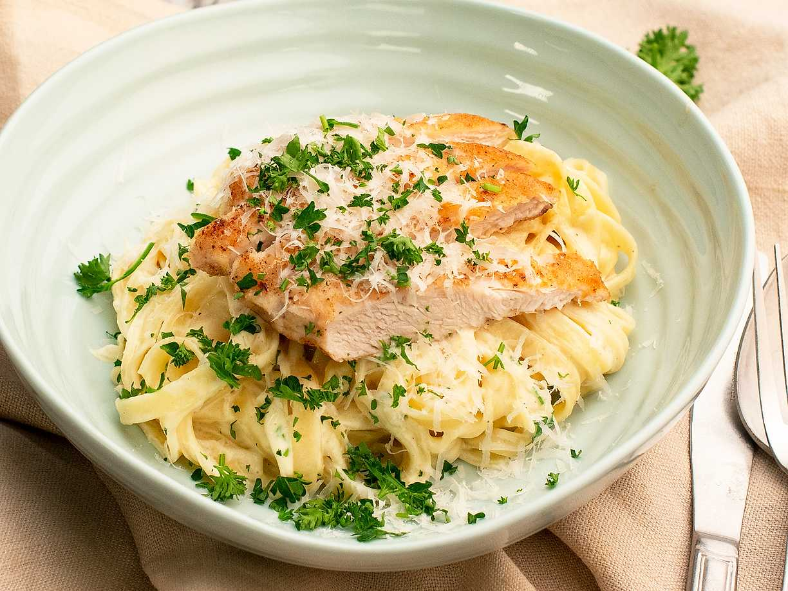
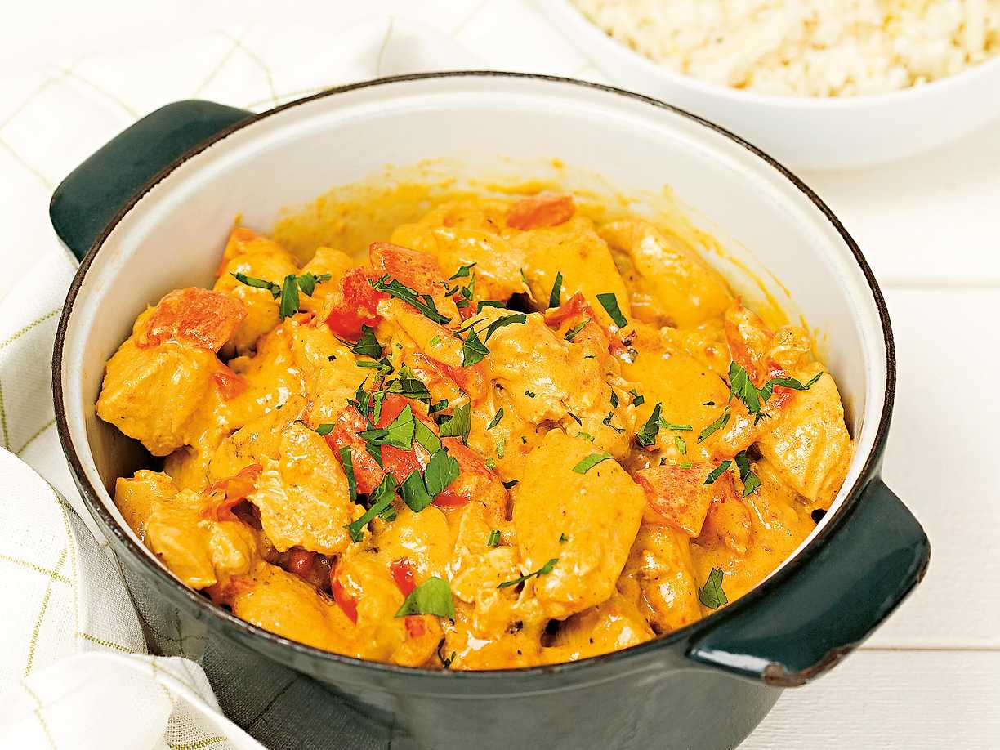

Kycklingrätter
Pasta Alfredo med kyckling

Ingredienser
- 400 g tagliatelle
- 2 kycklingfiléer
- 0,5 dl vetemjöl
- 1 bananschalottenlök
- 2 klyftor vitlök
- 2 msk smör, att steka löken i
- 100 g färskost
- 3 dl vispgrädde (eller matlagningsgrädde)
- 1,5-2 msk koncentrerad kycklingfond
- 1 dl parmesanost, riven
- salt
- svartpeppar, nymalen
Topping
- färsk persilja, finhackad
Gör så här
-
Halvera kycklingfiléerna till 4 tunna filéer. Vänd i mjölet, salta
och peppra.
- Finhacka schalottenlök och vitlök
-
Fräs mjukt i en stekpanna på medelhög värme tills löken blir mjuk
och glansig.
- Stek kycklingen gyllene i smör.
-
Vänd ned riven parmesan i såsen. Skär kycklingen i snygga skivor.
-
Blanda pastan med såsen och lägg kycklingen ovanpå vid servering.
Toppa med finhackad färsk persilja.
Kyckling i ugn med krämig sås

Ingredienser
- 600 g kycklingfiléer
- 1 msk olja
- 0.5 tsk peppar
- 3 dl grädde
- 2.5 msk senap
- 1 msk honung
- 1 vitlöksklyfta, riven
- 0.5 gul lök
- 75 g riven ost
- 0.5 tsk salt
Till servering
- 250 g broccoli
- 1 msk olivolja eller smör
- flingsalt
- 1 dl finriven parmesan
- 900 g potatis eller ris
Gör så här
-
Sätt ugnen på 225°. Hetta upp olja i en stekpanna, bryn kycklingen
runt om till fin färg. Salta och peppra. Koka ris eller potatis.
-
Lägg över kycklingen i en ugnssäker form. Blanda grädde, senap,
honung och vitlök med grovt riven lök och salt. Häll såsen över
kycklingen och toppa med riven ost.
-
Gratinera mitt i ugnen ca 25 min. Skär broccolin i buketter och
skiva stjälken tunt.
-
Lägg ner broccolin i kokande saltat vatten och låt koka ca 3 min.
Servera med olivolja/smör, flingsalt och färskriven parmesan.
Kycklinggryta med curry

Ingridienser
- 700 g kycklingfilé
- 2 röda paprikor
- 2 gula lökar
- 2 msk smör, att steka i
- ca 3 msk curry
- 1 msk paprikapulver
- 5 dl vispgrädde
- 2 dl crème fraîche
- 2 msk koncentrerad apelsinjuice
- 2 msk kinesisk soja
- 2 krm svartpeppar
Gör så här
- Skär kycklingfiléerna i bitar.
- Skölj, kärna ur och skär paprikan i bitar.
- Skala och skär löken i klyftor.
- Bryn kycklingen i smör i en stor gryta.
-
Tillsätt paprika, lök, curry och paprikapulver och låt fräsa cirka 3
minuter.
-
Tillsätt vispgrädde, crème fraiche, apelsinjuice, soja och peppar.
Låt bli varmt och se till att kycklingen är genomstekt. Servera!